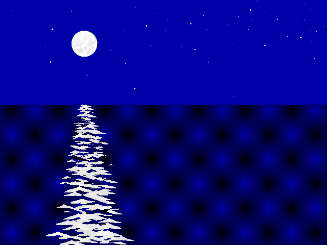
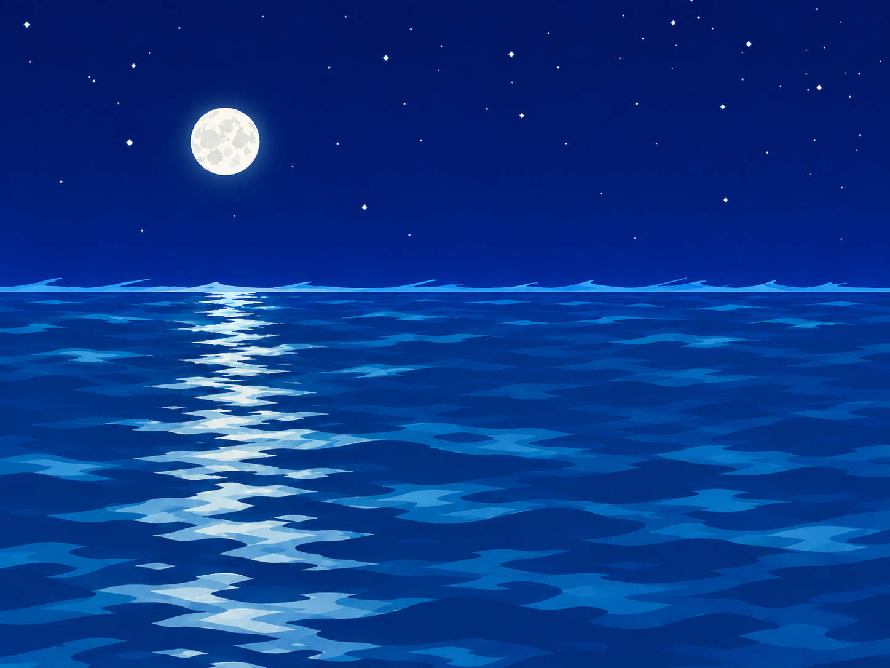

Show the approved daytime ocean for style comparison

Compare the original composition with the Cartoon draft. Judge the moon, sky and water colors. These are background images; the island, Johnny and moving clouds are separate layers.

Decoded source with the diagnostic palette; original-executable colors are not calibrated here.
The horizon is close to the original height. The moon sits a little lower. Draft for visual review.